The demo shot. The astronaut is real footage; the ground, mountains, stars and planet were built in Blender.
Key. Build. Composite.
Green screen is how actors get to places that do not exist. You do every stage here.
My supports
Turn on any help you want. Your teacher may have set some for you. They change how the guide helps, not what is assessed.
Shot brief
Put him on another world.
Two plates show an astronaut in front of green cloth: a wide shot from behind and a close-up. Deliver both with the studio replaced by a world you built, and a change of the director’s choosing.
You will hand in
A screenshot of your matte on three frames
The two finished shots, cut together, as an MP4
The director’s change, with a three-sentence explanation
Credits
Footage and credits
The astronaut footage and the camera solve come from a compositing course your teacher owns. Get them from the class folder. Do not post the raw footage anywhere.
Most places you see in films are part set, part computer. A compositor keys the actors off the screen, an environment artist builds the world, and a lighting artist makes the two agree. On a small production one person does all three, as you do here.
Knowledge first
Why this works.
A key removes one colour
The Keying node makes pixels transparent according to how close they are to the screen’s colour. The matte shows the result: white kept, black removed, grey partly.
Garbage first, edge second
A rough mask throws away the studio. The key then only has to get the edge of the actor right.
The light is already decided
The actor was lit on the day. Your world’s light must come from the same side and have the same hardness, or the join shows.
Design principles in the shot
Contrast: a white suit against a black sky. Scale: a small figure and a huge planet. Unity: one light source across footage and CG.
What this assesses
Skills you will show.
Skill (sprint skill ID)
Where you show it
Keying and integration · VP-KEY-01 · VP-INT-01
Steps 2, 3, 8 and 9
Lighting and render · BL-LGT-01 · BL-RND-01
Steps 6 and 7
Critique and refinement · GD-CRIT-01
Step 11
Primary achievement evidence: the director’s change (step 11). Guided steps and supports are recorded separately from achievement. Shot-library option in sprint mm12-26-s08.
Session A · Lesson 1 · VFX shot library
Key the green screen.
An astronaut walks in front of a green cloth in a warehouse. You will remove everything except the astronaut.
TODAYStudy and plan (15 min), the Keying node (25 min), garbage mask and edge check (25 min).
01
Watch the shot and study the plate
Start here: read or listen to the theory deck (about 10 minutes, with checkpoint questions), then come back.
IN SHORTWatch; scrub the plate; list what is not green; find the light direction; plan.
READ ALOUD
DOCUMENT: The finished demo · the two plates SELECT: Nothing yet TOOLS / ROUTE: Play · pause · look
Play the finished demo. Count the layers you can see: the far moon, the astronaut, the rocks in front.
Open the first plate (Shot 1) and scrub it. The camera tilts down while he climbs into view.
List everything in the plate that is not astronaut and not green: the roof, a lamp, a black flag, a ladder.
Look at the light on him. Which side is bright? Where would the sun have to be on your moon?
Write a three-line plan: what you key, what you build, what you composite.
1 · Key
Remove the green so only the astronaut is left.
2 · Build
A moon in Blender, seen through the same camera as the footage.
3 · Composite
Background, astronaut, foreground rocks, then a grade that joins them.
The demo: two shots, both keyed and composited in Blender.
STEP CHECKLIST
GLOSSARY
Plate: The filmed footage you add effects to
Green screen: A plain green backdrop that software can remove
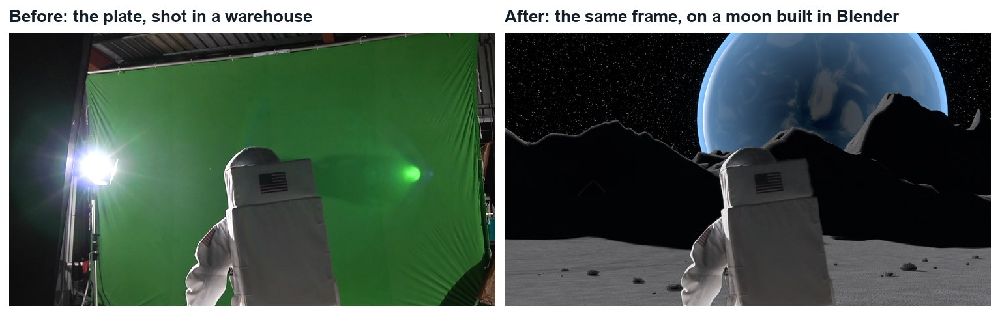
The plate and the finished frame. Everything except the astronaut is replaced.
WHYA key only removes green. Everything else that should go needs a different tool, and the light on the actor decides the light in your world.
CHECKA list of the non-green problems in the plate, the direction of the light on him, and a three-line plan.
FIXCannot tell where the light is? Look for the brightest edge of his backpack and the side with shadow.
WORKED EXAMPLE · DIFFERENT OBJECTIn the demo the lamp is behind him on screen-left, so the moon’s sun is low, behind him, on the left.
STRETCH (AFTER THE CHECK PASSES)Find a real Apollo photograph and note three things about how the ground and shadows look.
Method basis: B1. Values and sequence are authored for this project.
02
Pull the key with the Keying node
IN SHORTImage sequence; Keying node; pick Key Color; view the Matte; Black Level up, White Level down; check three frames.
READ ALOUD
DOCUMENT: Moonwalk_YourName.blend · Compositing SELECT: The plate with the green made transparent TOOLS / ROUTE: Add › Keying › Keying · Key Color · Black Level · White Level
Open the Compositing workspace. Add an Image node, open the first frame of Shot 1 and set it to an image sequence of 171 frames.
Add › Keying › Keying. Connect Image to Image. Click the Key Color swatch, choose the eyedropper, and click the green cloth near the astronaut.
Connect the Keying node’s Matte output to a Viewer. White is kept, black is removed. Grey is half-transparent, and is where keys go wrong.
Raise Black Level until the cloth is solid black. Lower White Level until the astronaut is solid white. Stop as soon as each is clean.
Connect Image to the Viewer again. Scrub to three different frames and check the matte on each.
Click by click (real Blender screenshots)
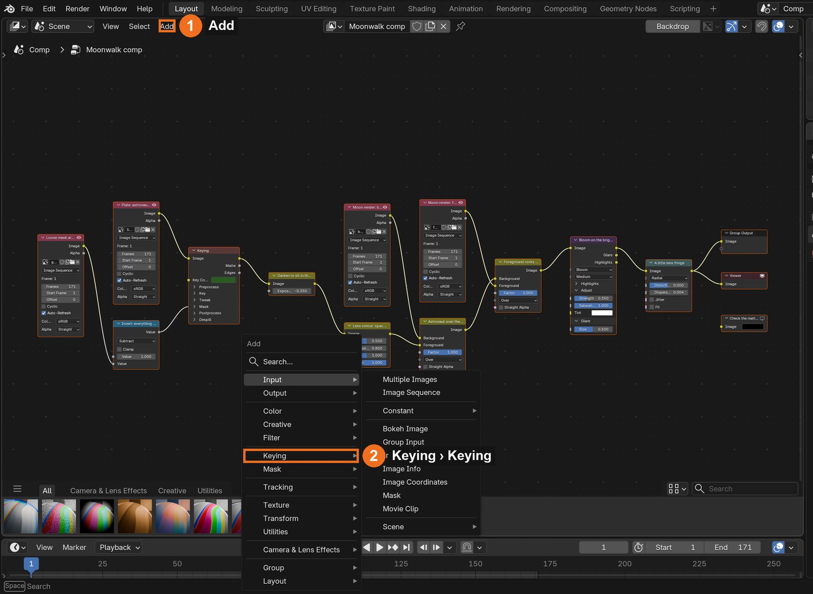
Add (1) › Keying (2) › Keying.
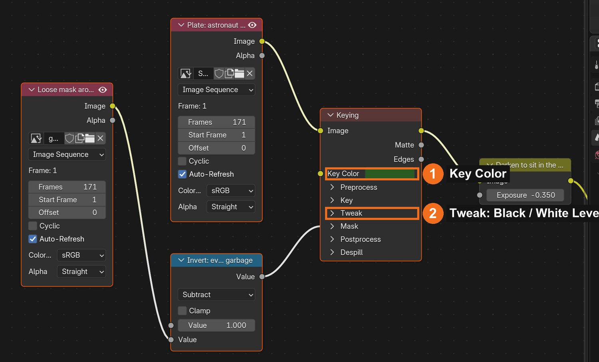
The Keying node in the demo file: Key Color (1), Black Level and White Level (2).
Where
Setting
Demo value
Keying node
Black Level
0.30
Keying node
White Level
0.62
Keying node
Dilate Size
−1
Keying node
Feather Size
1
What went wrong when we built the demo: our first key left a dark haze around the astronaut on every frame. We had typed the Key Color in as numbers copied from an image editor, which were the wrong kind of numbers for Blender. Picking the colour with the eyedropper, from the cloth in Blender’s own viewer, fixed it at once.
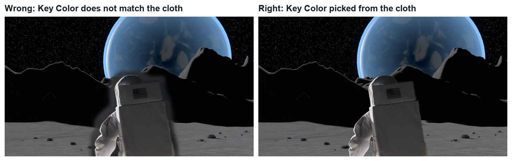
Wrong and right, same frame. Left: a Key Color that does not match the cloth leaves a dark haze. Right: the colour picked from the cloth.
STEP CHECKLIST
GLOSSARY
Key: To remove one colour from footage
Matte: A black-and-white image that says what is kept (white) and removed (black)
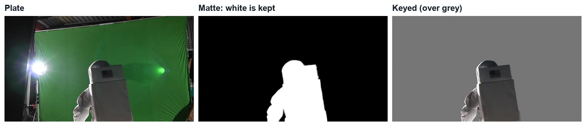
Real demo images, frame 110: the plate, the matte from the Keying node, and the keyed astronaut over grey.
WHYA matte is a black-and-white map of what to keep. Looking at the matte, not the picture, is how you find holes and haze.
CHECKA matte that is solid white inside the astronaut and solid black on the cloth, on every frame you check.
FIXDark haze around him? Your Key Color is not the cloth’s green: pick it again from the cloth in the viewer. Holes in his suit? White Level is too high.
WORKED EXAMPLE · DIFFERENT OBJECTDemo values: Black Level 0.30, White Level 0.62, Dilate −1, Feather 1.
STRETCH (AFTER THE CHECK PASSES)Try the Blur Size setting on the node and describe what it does to the edge.
Method basis: B1. Values and sequence are authored for this project.
03
Throw away the studio with a garbage mask
IN SHORTMask mode; loose shape; key every 15–20 frames; Mask node inverted into Garbage Matte.
READ ALOUD
DOCUMENT: Moonwalk_YourName.blend · Movie Clip Editor (Mask mode) · Compositing SELECT: A loose animated mask around the astronaut TOOLS / ROUTE: Mask › New · Ctrl-click points · I to key · Mask node · Invert
The key removed the green, but the roof, lamp and stands are still there. Open a Movie Clip Editor, load the plate, and switch to Mask mode.
Click New. Ctrl-click a loose shape around the astronaut, about a hand’s width away from him. Close it.
Move to a later frame, move the points to follow him, and press I. Repeat every 15 to 20 frames. He must never cross the line.
In the compositor add a Mask node, choose your mask, and invert it (Math › Subtract, 1 − mask). Connect it to the Keying node’s Garbage Matte input.
Check the matte again. Everything outside your shape is now black.
Click by click (real Blender screenshots)
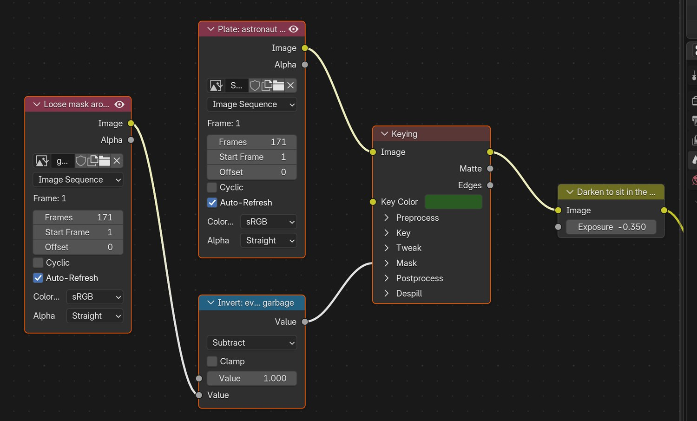
The first half of the demo node tree: plate, loose mask, Invert, Keying.
STEP CHECKLIST
GLOSSARY
Garbage mask: A rough shape that removes everything that is clearly not the subject
Spill: Green light from the screen that lands on the actor
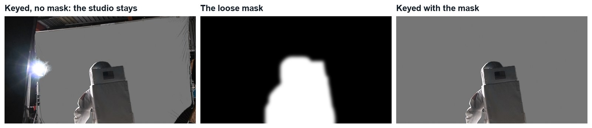
Real demo images, frame 110. Left: keyed, no mask: the roof and lamp stay. Middle: the loose mask. Right: keyed with the mask.
WHYA garbage mask does not need to be accurate. It only has to keep the rubbish out and stay clear of the actor. The key does the exact edge.
CHECKA matte with only the astronaut in it, for the whole shot.
FIXPart of him disappears on some frames? He crossed your mask: add a keyframe there and move the points out.
WORKED EXAMPLE · DIFFERENT OBJECTStated shortcut: the demo’s loose mask was grown automatically from the course’s own key. You draw yours.
STRETCH (AFTER THE CHECK PASSES)Look at the white suit near the cloth. Is it greenish? Add a Color Spill node after the key and compare.
Method basis: B5. Values and sequence are authored for this project.
Session B · Lesson 2 · VFX shot library
Build the moon.
Your starter file has the camera from the shoot already solved. You will build a moon for it to look at.
TODAYCamera check and ground (25 min), material and light (20 min), sky, mountains and render (25 min).
04
Check the tracked camera, then make the ground
Recall first (from last lesson, no peeking):
What does white mean in a matte? What does grey mean?
Which setting do you raise to clean up the green cloth?
What is a garbage mask for, and how accurate does it need to be?
Say or write your answers, then check them against your file.
IN SHORTCheck the camera; Grid 300 × 300; floor height; Displace + Clouds; craters with Proportional Editing.
READ ALOUD
DOCUMENT: Moonwalk_start.blend → save as Moonwalk_YourName.blend SELECT: A large, bumpy ground plane under the tracked camera TOOLS / ROUTE: Numpad 0 · Add › Mesh › Grid · Modifiers › Displace
Open the starter file. Press Numpad 0 and play: the camera tilts exactly as the real one did. Do not move it.
Add › Mesh › Grid. Give it at least 300 × 300 squares and scale it until it reaches well past the camera in every direction.
Move it down to the height of the studio floor, so the astronaut’s feet will land on it.
Add a Displace modifier with a new Clouds texture. Keep Strength low near where he walks. The ground should be bumpy, not hilly.
Add two or three craters: in Edit Mode turn on Proportional Editing (O), pick one vertex, and press G then Z to push it down.
Click by click (real Blender screenshots)
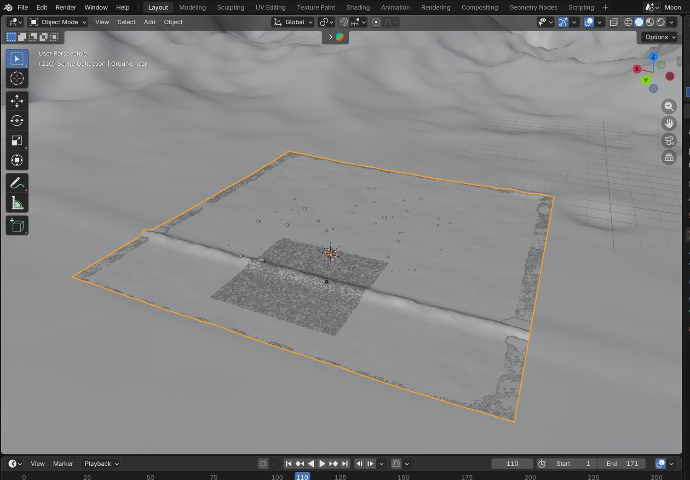
The demo moon from outside the camera: a fine patch of ground where he walks, a coarse one out to the mountains, and the camera at the right.
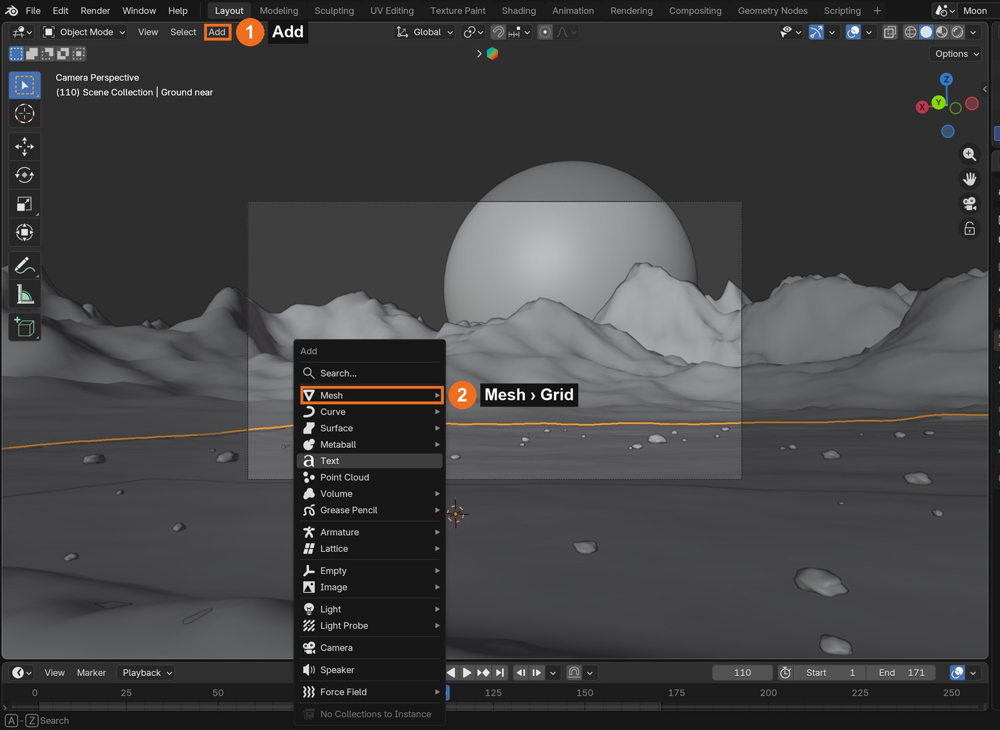
Add (1) › Mesh (2) › Grid.
Where
Setting
Demo value
Tracked camera
Focal length / sensor width
16.08 mm / 14.76 mm
Ground
Fine patch
150 units wide, 330 × 330
Ground
Height
the studio floor in the solve
STEP CHECKLIST
GLOSSARY
Camera solve: The real camera’s move, rebuilt in 3D from the footage
Displace: A modifier that pushes a surface up and down using a texture
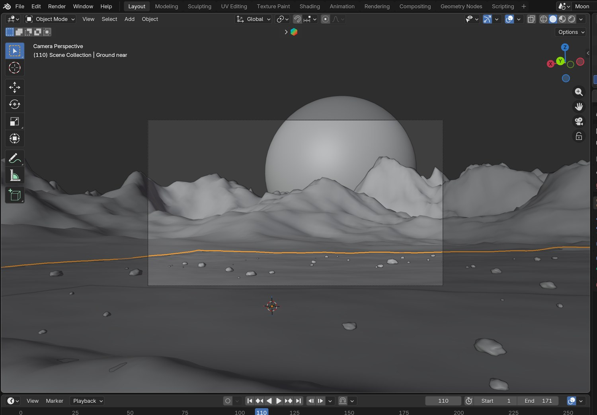
Real screenshot: the tracked camera’s view of the demo moon in Solid view, before any lighting.
WHYA tracked camera copies the real camera’s move. Anything you build under it will slide and tilt exactly like the footage, so the two can be joined.
CHECKA ground that fills the camera view for the whole shot, at floor height, with a few craters away from his path.
FIXGround swims against the footage? You moved the camera or its parent. Reopen the starter and append your ground into it.
WORKED EXAMPLE · DIFFERENT OBJECTStated shortcut: the demo’s ground was shaped by a script (the same idea: smooth near him, rougher far away, plus craters). The camera solve came with the course files.
STRETCH (AFTER THE CHECK PASSES)Add a low ridge of rock between the camera and the astronaut. You will use it as a foreground layer in Lesson 3.
Method basis: B3. Values and sequence are authored for this project.
05
Give the ground a dusty material
IN SHORTRoughness near 1; Noise → Color Ramp → Base Color; fine Noise → Bump → Normal; Object coordinates.
READ ALOUD
DOCUMENT: Moonwalk_YourName.blend · Shading SELECT: A grey, rough material with fine bumps TOOLS / ROUTE: Noise Texture · Color Ramp · Bump
Shading workspace. Give the ground a new material and set Roughness close to 1. Moon dust is not shiny.
Add a Noise Texture and a Color Ramp from dark grey to mid grey. Connect it to Base Color.
Add a second, finer Noise Texture into a Bump node, and connect the Bump to Normal.
Use Texture Coordinate › Object for both, so the pattern stays on the ground.
Look through the camera in Material Preview. It should read as dust and grit, with no repeating pattern.
STEP CHECKLIST
GLOSSARY
Roughness: How dull or shiny a surface is
Bump: Fake small-scale relief made by bending the surface’s shading
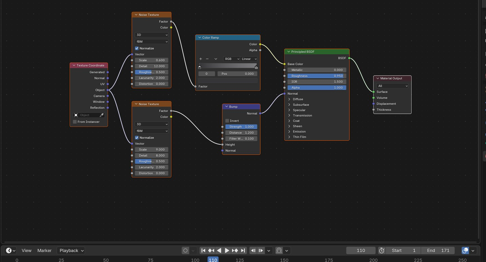
Real screenshot: the demo’s ground material. Two Noise Textures: one for colour, one for bumps.
WHYReal ground has detail at every size: big patches of colour and tiny grains. Two noises at different scales give you both.
CHECKA ground that looks like grey dust from the camera, with visible fine texture near the lens.
FIXGround looks like plastic? Roughness is too low. Looks flat? The Bump node is not connected to Normal.
WORKED EXAMPLE · DIFFERENT OBJECTDemo colours: dark grey 0.035 to mid grey 0.20. Bump strength 1.0.
STRETCH (AFTER THE CHECK PASSES)Add a third noise that makes some areas slightly browner.
Method basis: B3. Values and sequence are authored for this project.
06
Light it like space
IN SHORTSun from behind-left, low; tiny Angle; black World; stars by Noise + Color Ramp + Is Camera Ray.
READ ALOUD
DOCUMENT: Moonwalk_YourName.blend SELECT: One hard sun; a black sky with stars; no fill TOOLS / ROUTE: Add › Light › Sun · Angle · World nodes
Add › Light › Sun. Rotate it so the light comes from behind the astronaut on the same side as the studio lamp, and low to the ground.
Set the sun’s Angle very small. With no air, shadows on the moon have sharp edges.
World properties: make the background black. On the moon the sky is black even in daylight.
For stars, plug a large-scale Noise Texture through a tight Color Ramp into the Background strength. Use Light Path › Is Camera Ray so the stars are seen but light nothing.
Switch to Rendered view through the camera. Long black shadows should fall towards you.
Click by click (real Blender screenshots)
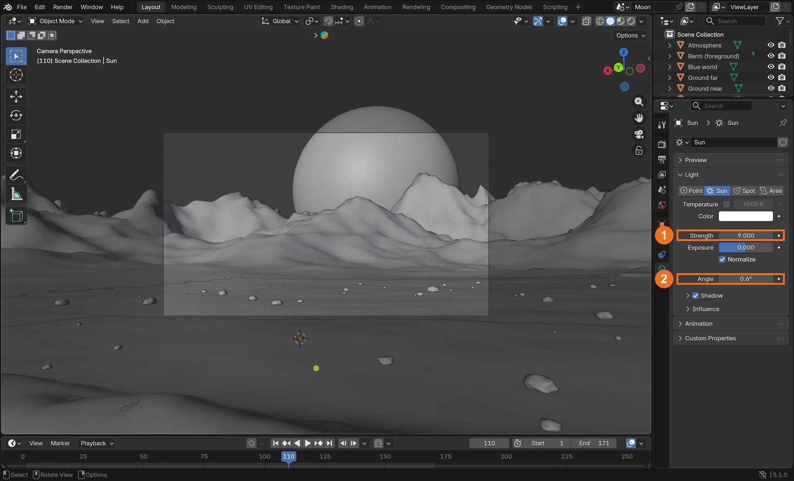
The Sun selected: Object Data properties show Strength and Angle.
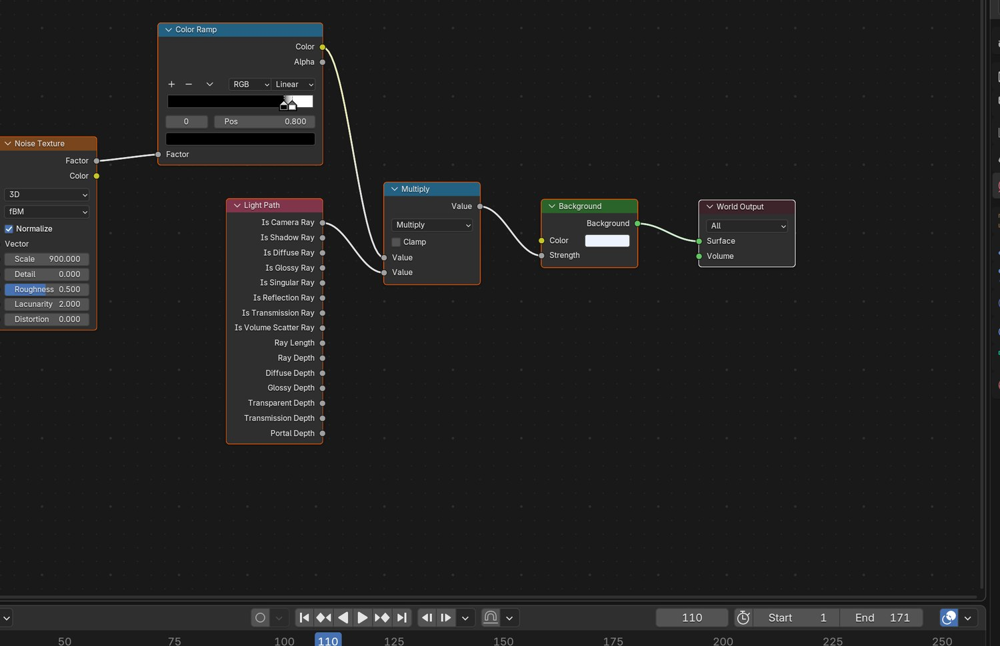
The demo’s World nodes: Noise Texture → Color Ramp → multiplied by Is Camera Ray → Background strength.
What went wrong when we built the demo: our first sun pointed the wrong way. The whole landscape was evenly lit and flat, while the astronaut was lit from behind. We had set the rotation by guessing angles. Aiming the sun along a direction we could name (from behind him, on the left, low) fixed the shot in one go.
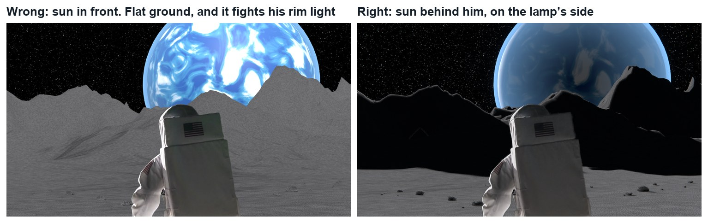
Wrong and right, same frame. Left: the sun in front, so the ground is flat and does not match his rim light. Right: the sun behind him.
STEP CHECKLIST
GLOSSARY
Hard light: Light from a small source: sharp shadow edges
Fill: Soft light that lifts the shadows. The moon has almost none
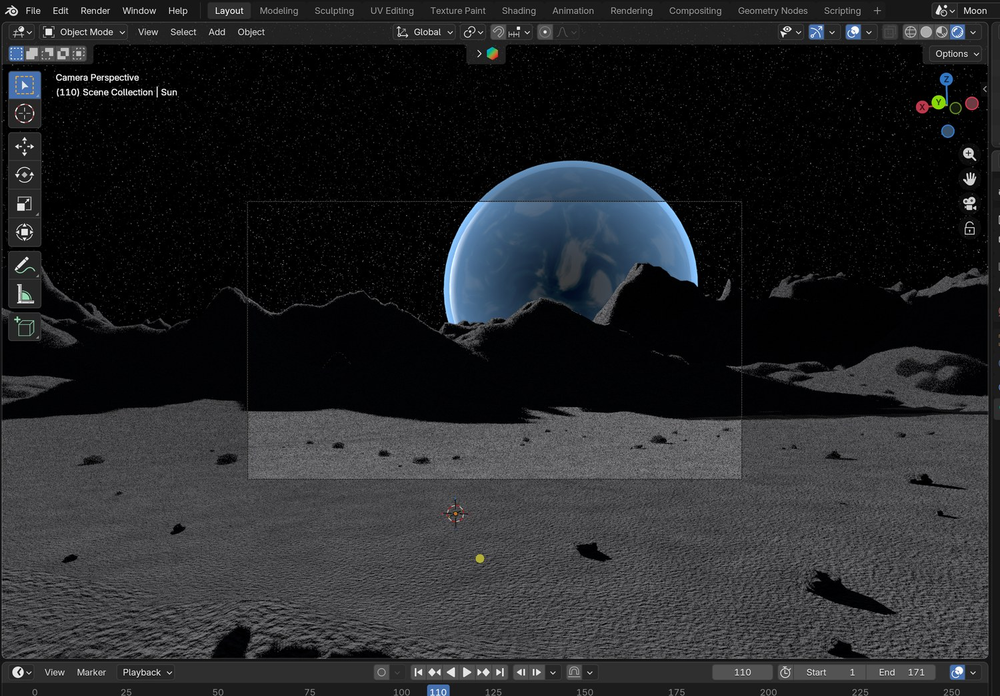
Real screenshot: Rendered view through the tracked camera. A low, hard sun from behind on the left; black sky.
WHYThe light in your world has to agree with the light already on the actor. On the moon there is one light, no air and no soft fill.
CHECKA rendered view with hard-edged shadows falling towards the camera and a black, starry sky.
FIXShadows soft? The sun’s Angle is too large. Whole scene grey? The World is still lighting it.
WORKED EXAMPLE · DIFFERENT OBJECTDemo values: Sun strength 9, Angle 0.6°. Stars: Noise scale 900, Color Ramp 0.80 to 0.86.
STRETCH (AFTER THE CHECK PASSES)Add a second, very weak blue sun with shadows off, coming from your planet: planet-shine.
Method basis: B4. Values and sequence are authored for this project.
07
Add a horizon, a world in the sky, and render two passes
IN SHORTMountains; planet sphere; fg collection; render bg; hide the rest, Transparent on, render fg.
READ ALOUD
DOCUMENT: Moonwalk_YourName.blend SELECT: Mountains, a planet, and two PNG sequences TOOLS / ROUTE: Displace · UV Sphere · Film › Transparent · Render Animation
Far from the camera, raise the ground into mountains: a second, coarser grid with a strong Displace, or sculpt the far edge of your first one.
Add a very large UV Sphere far behind the mountains for a planet of your own design. Give it a noise-based material and a soft glowing edge.
Select your foreground ridge and rocks (anything nearer the camera than the astronaut). Put them in a collection called fg.
Render the animation with everything visible to a folder called bg (PNG).
Hide everything except fg, tick Film › Transparent, and render again to a folder called fg (PNG, RGBA).
STEP CHECKLIST
GLOSSARY
Pass: One layer of a shot rendered on its own
Foreground: Things nearer the camera than the actor
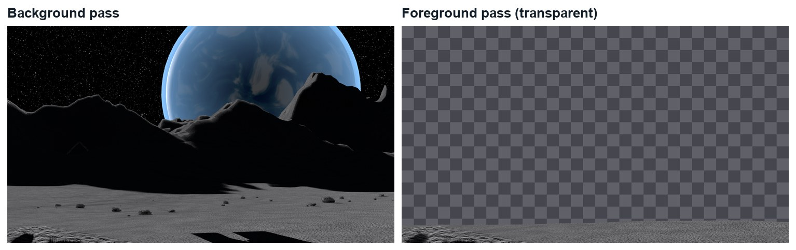
Real renders from the demo, frame 171: the background pass, and the foreground pass on a transparent background.
WHYHe must go behind some things and in front of others. Two passes let you slide the astronaut between them.
CHECKTwo PNG sequences, 171 frames each: a full background, and foreground rocks with a clear background.
FIXForeground pass has a black background? Film › Transparent is off, or the PNG is RGB, not RGBA.
WORKED EXAMPLE · DIFFERENT OBJECTThe demo planet is an original design: a blue world 520 units in radius, 2,300 units away.
STRETCH (AFTER THE CHECK PASSES)Give your planet rings or a moon of its own.
Method basis: B3. Values and sequence are authored for this project.
Session C · Lesson 3 · VFX shot library
Composite, match, deliver.
Three layers become one picture. Then a director asks for a change.
TODAYLayer and match (25 min), the close-up (20 min), director’s change and render (25 min).
08
Stack the layers in the right order
Recall first (from last lesson, no peeking):
Why must you not move the tracked camera?
Why are shadows on the moon sharp?
Why did you render the foreground rocks separately?
Say or write your answers, then check them against your file.
IN SHORTbg and fg nodes; Alpha Over (bg, astronaut); Alpha Over (result, fg); play.
WHYCompositing is stacking. Order is depth: whatever is plugged in last is nearest the camera.
CHECKA shot where the astronaut is behind the foreground and in front of everything else.
FIXHe covers the foreground rocks? The two Alpha Over nodes are in the wrong order.
WORKED EXAMPLE · DIFFERENT OBJECTIn the demo his feet are at the very bottom of the frame, so a small height error does not show.
STRETCH (AFTER THE CHECK PASSES)Give him a shadow: put the keyed plate on a plane at his distance, hidden from the camera but not from the sun.
Method basis: B2. Values and sequence are authored for this project.
09
Match the astronaut to the moon
IN SHORTExposure down; Saturation down; Bloom with high Threshold; compare blacks; toggle nodes.
READ ALOUD
DOCUMENT: Moonwalk_YourName.blend · Compositing SELECT: Exposure, colour and glow that join the layers TOOLS / ROUTE: Exposure · Hue/Saturation · Glare
Put an Exposure node between the key and the first Alpha Over. Lower it until his suit is no brighter than the brightest ground.
Add a Hue/Saturation node and lower Saturation a little. Studio light is warmer than sunlight in space.
After the last Alpha Over, add a Glare node set to Bloom, with a high Threshold so only the brightest edges glow.
Compare the black of his shadows with the black of the ground’s shadows. They should be the same black.
Turn each node off and on (M) and decide whether it helps.
Where
Setting
Demo value
Exposure
Exposure
−0.35
Hue/Saturation
Saturation
0.8
Glare
Type / Threshold / Strength
Bloom / 0.85 / 0.35
STEP CHECKLIST
GLOSSARY
Exposure: Overall brightness, measured in stops
Bloom: A soft glow around very bright areas
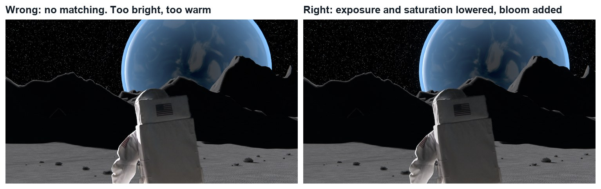
Wrong and right, same frame. Left: the key with no matching: too bright and too warm. Right: exposure and saturation lowered, bloom added.
WHYTwo pictures join when their blacks, their brightest whites and their colour agree. The eye forgives a lot if those three match.
CHECKA frame where the astronaut’s brightness and colour sit with the ground’s.
FIXHe looks grey and dull? You lowered Exposure too far: match his highlights to the sunlit ground, not to the shadows.
WORKED EXAMPLE · DIFFERENT OBJECTDemo values: Exposure −0.35, Saturation 0.8, Bloom Threshold 0.85 and Strength 0.35.
STRETCH (AFTER THE CHECK PASSES)Add film grain over everything so the CG and the footage share one texture.
Method basis: B2. Values and sequence are authored for this project.
10
Make the close-up from the same world
IN SHORTReverse camera; one still; key Shot 2; blur and darken the still; keyed drift.
READ ALOUD
DOCUMENT: A second compositing scene SELECT: Shot 2 keyed over a soft reverse-angle background TOOLS / ROUTE: New camera · Render Image · Keying · Blur
In your moon scene add a new camera where the astronaut stands, looking back the other way and slightly up.
Render one still from it, a little larger than 1920 × 1080.
In a new compositing scene, key Shot 2 the same way as Shot 1. The cloth fills the frame, so you may not need a mask.
Put the key over your still. Blur the still: in a close-up the lens is focused on his face, so the background is soft.
Key a slow drift on the still with a Transform node, so it does not sit dead still behind a moving actor.
STEP CHECKLIST
GLOSSARY
Reverse angle: A shot looking back the opposite way
Depth of field: How much of the picture is in focus
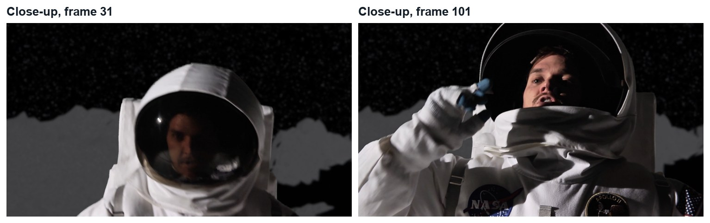
Real demo frames from the close-up: the same key method, over a blurred still from the same moon.
WHYA second angle on the same world is what makes a place feel real. It only works if the light and the land agree between shots.
CHECKA close-up that could be cut straight after your first shot.
FIXBackground looks like a cut-out? It is too sharp and too bright. Blur it more and lower its exposure.
WORKED EXAMPLE · DIFFERENT OBJECTDemo values: reverse camera 28 mm, Blur 16 px, background Exposure −1.4.
STRETCH (AFTER THE CHECK PASSES)Reflect your planet in his visor.
Method basis: B1. Values and sequence are authored for this project.
11
Practical check: the director’s change, then render and defend
IN SHORTRead the card; pick the stage; change a copy; render; defend; credit.
READ ALOUD
DOCUMENT: Your shot · the director’s card SELECT: Whatever the card requires TOOLS / ROUTE: Your own decisions
Read your director’s card (below).
Decide which stage it touches: key, world, light or composite. Change as little as possible, in a copy of your file.
Render both shots and cut them together (FFmpeg, H.264).
Screen it and explain one keying choice and one lighting choice.
Credit the footage and any models or textures in your evidence.
Card
The director says
1 · Red planet
“Not the moon. Somewhere with red dust and a pale sky.”
2 · Two suns
“This world has two suns. I want two shadows from everything.”
3 · Night side
“The sun has set. Only the planet lights the ground.”
4 · Not alone
“Something else is on the horizon. Your design, and it must sit in the light.”
Independent evidence: the main achievement evidence for this tutorial.
STEP CHECKLIST
GLOSSARY
Revision: A requested change to a shot
WHYA shot built in stages can be changed without starting again.
CHECKA changed shot that meets the card, rendered, with an explanation and credits.
FIXStuck? Name the stage the card touches first. (Independent step: the Coach can explain tools but not decide your changes.)
WORKED EXAMPLE · DIFFERENT OBJECTWorked example on a different shot: a “make it dusk” card only needed the sun and the grade changed, not the key.
STRETCH (AFTER THE CHECK PASSES)Take two cards at once.
Method basis: B1. Values and sequence are authored for this project.
Before you submit
Student QA.
Evidence conversation
Keep it short and specific.
SENTENCE FRAMESI cleaned the matte by ___. · I put the sun ___ because ___. · For the director’s card I changed the ___ stage using ___.
Figures marked Illustration are drawn, not screenshots. Step values are starting points authored for this project. Draft for teacher review; not yet classroom-piloted.